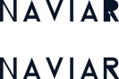
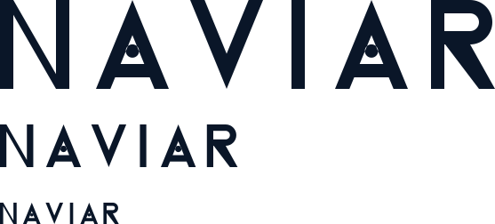

Wordmark
master · 557 × 100 · stroke %15
reverse
responsive · tracking −%17
200 px
130 px
96 px · minimum
Monogram ve ikonlar
two-tone · altın %14,0
tek renk
64
32
16
Lockup
Descriptor sistemi
CONSULTING
AI
PLATFORM
RESEARCH INSTITUTE
ACADEMY
LABS
CARE · ONAY BEKLİYOR — mimaride yok
Arşiv çalışmaları — master değildir

P6 · açık R (üst, reddedildi) /
kapalı R (alt, master) · 1:1 @ 24 cap
P7 · 16 / 24 / 32 / 48 px · 1:1
P1 · sculptural N, düz vektör

P4 · Dot-A · 100 / 48 / 24 cap height, 1:1 — noktalar 24'te kayboluyor
Renkler
Midnight Navy
#0A1628
Premium Gold
#D4AF37
Off White
#F5F6F8
Graphite
#1E1E1E
Accent Cyan
#00B2E3
Altın, açık zeminde metin olarak kullanılmaz.
#D4AF37 beyaz üzerinde 2,10:1 kontrast verir — WCAG AA eşiği 4,5:1. Altın yalnız
yapısal aksandır. Accent Cyan yalnız veri görselleştirme ve dijital UI içindir,
master markada asla yer almaz.
Ölçüm kanıtı
| Kriter | Spec | Üretilen | Durum |
|---|
| Wordmark stroke | H'nin %14–16'sı | %15 | ✔ |
| Çift aralıkları | 0,30 / 0,24 / 0,32 / 0,34 / 0,26 H | 30 / 24 / 32 / 34 / 26 | ✔ |
| A crossbar | ≥ 0,14H | 0,15H | ✔ |
| A counter | ≥ 0,20H | 0,27H | ✔ |
| R | kapalı bowl + diyagonal bacak | kapalı bowl + bacak | ✔ |
| Responsive tracking | −%15–20 | −%17 | ✔ |
| Monogram footprint | ~760 × 800 | 760 × 800 | ✔ |
| Ribbon | 145–160 | 150 | ✔ |
| Altın aksan | %12–16 | %14,1 | ✔ |
| Descriptor cap | %24–30 | %27 | ✔ |
| Efektler | gradient/gölge/3D yok | yok | ✔ |
| Diyagonal açı | 38–42° | 29,9° (dikeyden) | ✘ |
Tek sapma: diyagonal açı — onay bekliyor.
Spec'in üç monogram sayısı birbiriyle çelişiyor. 760 × 800 footprint ve 150 birim
ribbon sabitken diyagonale kalan yatay açıklık 460 birimdir; bu da dikeyden 29,9°
verir. 38–42° için footprint'in ~971 birime çıkması, yani "~760 × 800" şartının
bozulması gerekir. Footprint ve ribbon korundu, açı sapması bilerek bırakıldı.